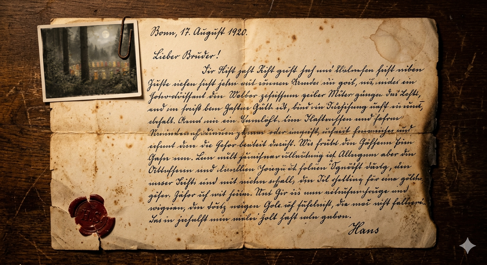

EXKLUSIV
POWERPOINT-KARAOKE · SONDERAUSGABE
2026
Aufgedeckt
DIE
GOLDBÄR-
VERSCHWÖ-
RUNG

SCHOCK-REPORT
WAS WIRKLICH IN DER TÜTE STECKT
SEITE 1
SPEZIES
DIE AUSGEROTTETE ART
Lateinisch
Ursus
gummi-
formis
Der echte Gummibär

Vollmond-Tanzkreis · Siebengebirge · um 1915

Über Hans Riegels Entdeckung · Bonn 1920
FAKTENKEINE SKELETTE · KEINE FOSSILIEN · KEINE BEWEISESEITE 3
1920
DER MANN, DER DIE LICHTUNG FAND
Spätsommer 1920
Eine "routinemäßige"
Wanderung.
3 Monate später:
Firmengründung.
Firmengründung.

Hans Riegel · Konditor · Bonn

Die alte Fabrik · Bonn
CHRONIKVOM WANDERWEG IN DIE BONBON-FABRIKSEITE 4
Macht die Augen auf!
Erdbeere ist
ROT.
Bei Haribo:
Grün bis 2007.
Grün bis 2007.

Von wegen so gewollt.
CRISPR · Neue Farben endlich möglich · ab 2007
BEWEIS BIOLOGIEFARBE UND AROMA WAREN GENETISCH GEKOPPELTSEITE 5
2014
"PFLANZLICHER FARBSTOFF"
2014
Plötzlich:
Blaue
Bären.
Haribo sagt: „Aus Algen."

Google · "Algen" · Grün!
Experte · "Entweder aus Babys oder Gentechnik!"
WIDERSPRUCHBIOLOGIE GEGEN MARKETINGSEITE 6
PROMI
DER MANN, DER REDEN WOLLTE
1991 — 2014
24 Jahre.
Dann Aus.
Er wollte
auspacken.
auspacken.

Thomas Gottschalk · "Man darf nix mehr sagen."
Malibu · der Brand · November 2018
CHRONOLOGIEEINGEWEIHT · AUSGESTIEGEN · ABGEBRANNTSEITE 7